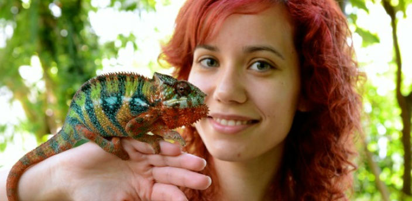

Desde hace no mucho, en el zoo de Madrid puedes interactuar con los animales de dos formas: te puedes hacer fotos con ellos y puedes darles de comer. Además de estas sencillas interacciones, hay talleres especiales en los que podrás convivir durante unas horas con los animales más interesantes. En este enlace puedes ver todas las posibilidades, horarios y precios de las actividades con animales en el Zoo de Madrid.